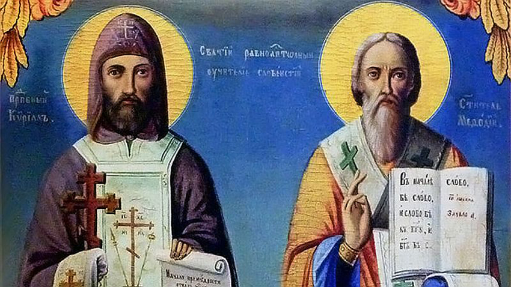

| Как нашето училище ще чества празника? |
|
Природоматематическа гимназия "Академик Иван Гюзелев" ще отбележи Деня на българската просвета и култура с тържествена програма, в която ще се включат ученици и учители. Ще има празнични изпълнения на стихотворения, музика и танци, които ще подчертаят важността на 24 май и значението на родния език и писменост. Учениците от различни класове ще представят тематични проекти и презентации, свързани с живота и делото на светите братя Кирил и Методий, както и с историята на българската писменост. Ще се организират и конкурси за есета и рисунки на тема „Кирил и Методий – символ на просветата“, като ще бъдат наградени най-добрите творби. Също така, на 24 май ще се проведе и традиционното тържествено шествие в града, в което ще се включат ученици и преподаватели от нашето училище. С гордост ще поднесем цветя на паметниците на светите братя Кирил и Методий, отдавайки почит към тяхното величие и завета им. Този ден ще бъде още един повод да си припомним колко важен е пътят на знанието и културата и колко дълбоко е залегнала в основите на нашето училище ценността на просветата. |
 |